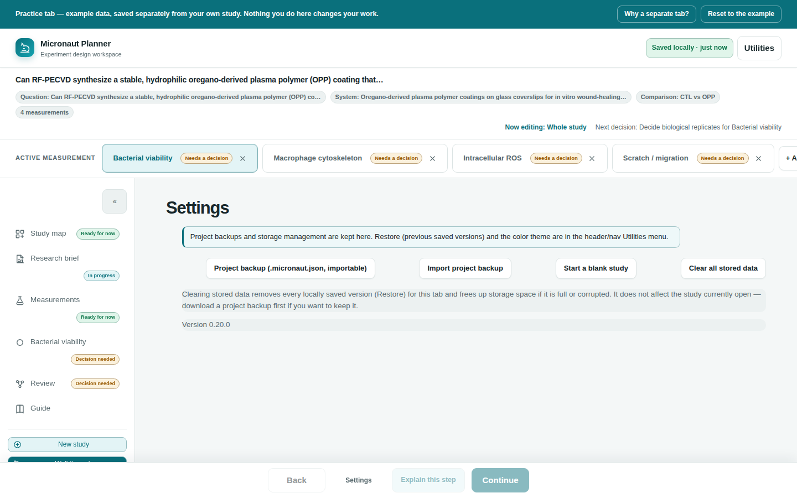

Chapter 10
Saving, Backups & Privacy
Where your study actually lives, how to protect and move it, and exactly what leaves your browser when you ask for help.
What you'll be able to do
- Understand that your study lives only in this browser, on this device — with no account or server behind it
- Read the save indicator and know what each of its states means
- Use Restore to recover an earlier version of your work
- Export and import a full project backup, including what happens if the file is invalid
- Use Clear all stored data safely, and know exactly what it does and doesn't touch
- Know precisely what the Feedback page shares, and what it never shares automatically
Where your data lives
Micronaut Planner is 100% client-side. There is no server, no account, and no sync — your study is autosaved into this browser's own local storage, on this one device. Nothing you type is ever uploaded anywhere, and no language model is ever called by the app itself.
🔍 Why it works this way. Local storage is a convenience, not a permanent record: it can be cleared by the browser, isn't shared between machines, and is lost entirely in a private/incognito window. Treat it as a working copy, and use Download project backup whenever the work matters.
⚠️ Careful. Opening Micronaut on a different computer, or a different browser on the same computer, starts you with a blank study — nothing "follows you." Move your work across with a project backup file, covered below.
Autosave and the save indicator
Every change you make is saved automatically, a short moment (about half a second) after you stop typing — this is deliberate: saving on every keystroke would fill your saved-version history with near-duplicate snapshots of the last few characters typed, rather than a handful of genuinely distinct states. A small indicator near the top of the app always shows the current state:
| Indicator text | Meaning |
|---|---|
| Saving locally… | A change was just made and is about to be written to storage. |
| Saved locally (with a time) | Your latest change was written successfully. |
| Not saved locally yet | Nothing has been saved in this session yet. |
| An error message (e.g. about storage being full) | The save failed — see If storage fails below. |
Restore: previous saved versions
Micronaut keeps your last five distinct autosaved versions in a rotating history, oldest dropped automatically as new ones are saved. Open the Utilities menu (near the top of the app) to see Restore previous version, listing each saved version by the study's own title, newest first (labelled "Latest:").
- Open Utilities and find a version under "Restore previous version."
- Click it, then confirm — restoring replaces your current in-memory study with that saved version. (Your current work is itself autosaved before you'd lose access to it, since restoring is just another change.)
- To permanently remove one saved version instead of restoring it, click the small close/delete icon next to it, then confirm. This only removes that one entry — the other saved versions, and whatever you currently have open, are untouched.
💡 Tip. Restore is a safety net, not a substitute for a real backup — it only ever holds your last five distinct autosaves, and Clear all stored data deletes this history entirely. Export a project backup for anything you'd be upset to lose.

Project backups: export and import
A project backup is a single .json file holding your entire study. It's the one copy that survives clearing your browser's storage, moving to a new computer, or sharing your plan with a collaborator.
- Open Settings (or the Utilities menu) and click Download project backup (Utilities calls it "Export project backup" — same action). This downloads a
.jsonfile immediately; there's no dialog to fill in. - To bring a backup back in, click Import project backup (Settings or Utilities) and choose the file.
- A successful import replaces your currently open study with the imported one, and that becomes the study now being autosaved.
Move your study to another computer
Download a project backup on the first machine, copy the file across by whatever means you'd move any file (email, a USB drive, a shared drive), then import it on the second machine.
⚠️ Careful. Importing replaces your whole current study — there's no merge. If your current work isn't backed up yet, export it first.
What happens with an invalid or damaged file
Every imported file is checked before it's allowed anywhere near your study:
- If the file is corrupted or simply isn't a Micronaut project backup at all, the import is refused outright with an error message explaining why, and your current study is left completely unchanged.
- If the file is a genuine backup but one or more small parts of it are malformed (for example a corrupted internal record), those specific parts are reset to sensible defaults rather than the whole import being thrown away — you're then told how many parts this happened to, with the details logged to the browser's console, so nothing is silently lost or silently changed without you knowing.
- A backup from a newer, unrecognized version of Micronaut than the one you're running is also refused, rather than risking a partial or incorrect import.
Starting over: New study and Reset to example
New study (in the nav rail) clears the workspace to a blank study after you confirm. Reset to example study first writes the exact current study to a protected Restore slot, then opens the shipped example. Demo saves never evict that protected user snapshot; if it cannot be preserved, the example is not opened.
Clear all stored data
Settings also has Clear all stored data — the one destructive action in the app, and the only one guarded by a two-click "arm" instead of a single confirmation dialog: the first click changes the button's own label to "Click again to permanently clear all stored data" and arms it for a few seconds; a second click within that window actually clears everything, while letting the arming time out on its own disarms it again with no effect.
- It removes every locally saved version (the entire Restore history) — freeing up storage space if it's full or corrupted.
- It does not touch the study currently open in your browser tab. Your open work is safe, and Micronaut immediately writes it into the now-empty history as a fresh save, so autosaving resumes right away.
💡 Tip. If you want to keep anything from your Restore history, download a project backup of it first — clearing removes that history for good, with no undo.
If storage fails
If your browser's storage is full or otherwise unavailable, the save indicator shows an explicit error rather than failing silently, and suggests exactly this: export a project backup, then either clear all stored data from Settings or delete an old saved version from Restore to free up space.
What "Copy feedback package" actually shares
The Feedback page lets you describe what happened, then package it up to share. Nothing about your study or browser is ever sent anywhere until you actively choose one of its sharing actions — and even then, nothing is sent automatically by the app itself.
A feedback package is a plain-text block containing:
- Whatever you typed describing what you were trying to do
- A timestamp, which step/page you were on, and a count of any knowledge-pack issues detected
- Your browser's user-agent string
- Your entire study, as JSON — so a real problem can actually be reproduced
Four ways to hand that package off, all reached from the Feedback page:
| Action | What it does |
|---|---|
| Copy feedback package | Copies the whole block to your clipboard, to paste wherever you're sharing feedback. |
| Download feedback package | Downloads it as micronaut-feedback.txt (and also copies it), so you can attach the file instead of pasting text. |
| Email feedback | Only appears at all once a real recipient address is configured — currently it is not, so this button is not shown. Even when available, the app never places your feedback or study data into the email link itself; it copies the package and expects you to paste it into the message body yourself, since a pre-filled mail link would get silently cut off after a couple thousand characters. |
| Open GitHub issue | Copies the package, then opens a prefilled new-issue page (with the "feedback" label already applied) on GitHub. The GitHub link itself carries no feedback text, browser details, or study data — you paste the copied package into the issue body yourself, after signing in if needed. |
🔍 Why it works this way. There's no server behind Micronaut that could send anything on your behalf, and a link that tried to carry your whole study as a URL parameter would be unreliable and would leak it into browser history and server logs along the way. Copy-then-paste keeps you in control of exactly what gets shared, and to whom.
Check yourself
You open Micronaut on your lab's shared computer, then later open it on your laptop. Is your study there too?
No — your study lives only in the browser storage of the device (and browser) where you entered it. Move it across with a project backup file (Settings or Utilities → Export/Import project backup).
You click "Clear all stored data" by mistake and confirm. Is the study you currently have open lost?
No. Clearing removes your saved-version history (Restore), not the study currently open in your browser tab — that study is immediately re-saved into the now-empty history.
Does clicking "Copy feedback package" send your study to anyone?
No. It only copies the package to your clipboard. Nothing is sent until you paste it somewhere yourself — into an email, a form, or a GitHub issue you open separately.